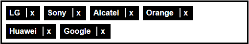

Créer des « tags » accessibles 1/2
Préambule
Dans cet exemple, nous allons voir comment réaliser des « tags » accessibles. Vous savez, ces boutons que nous utilisons pour taguer du contenu, pour afficher une liste de destinataires...
Rendu final
Voici un exemple de rendu graphique :
Structure HTML
Comme les tags ne se promènent jamais seuls, nous allons créer une liste HTML. Ainsi, un utilisateur qui navigue à l’aide d’un lecteur d’écran entendra directement le nombre de tags affichés: « Liste de x éléments… ».
<ul>
<li>Alcatel</li>
<li>Doro</li>
<li>Apple</li>
<li>LG</li>
<li>Sony</li>
</ul>
Exemple 1

Suppression d’un tag
Un tag doit pouvoir être supprimé. Nous allons ajouter un bouton « Supprimer » sur chaque élément de notre liste. Pour les utilisateurs qui ne voient pas l’écran et qui naviguent à l’aide d’un lecteur d’écran, un simple bouton « Supprimer » n’est pas suffisant. Nous allons ajouter le nom du tag dans l’intitulé du bouton pour ôter toute ambiguïté. Exemple : « Sony, Retirer Sony de la liste ».
L’utilisation d’un vrai bouton, rend cette fonctionnalité accessible au lecteur d’écran, mais également aux personnes qui ne peuvent pas utiliser une souris et qui naviguent à l’aide du clavier en déplaçant le focus (touche Tab). En effet, un bouton est focusable nativement.
<ul>
<li>Alcatel<button>Retirer Alcatel de la liste</button></li>
<li>Doro<button>Retirer Doro de la liste</button></li>
<li>Apple<button>Retirer Apple de la liste</button></li>
<li>LG<button>Retirer LG de la liste</button></li>
<li>Sony<button>Retirer Sony de la liste</button></li>
</ul>
Exemple 2

Et voilà ! des tags simples et accessibles. Bon OK, ce n’est pas très beau.
Un peu de déco
Maintenant que nous avons des tags accessibles, on peut passer à la déco. L’idéal serait de faire ressembler nos tags à la première illustration proposée au début de cet article. Plusieurs solutions sont possibles.
On peut par exemple commencer par remplacer l’intitulé du bouton par un « X » ou un icône en forme de croix.
<ul>
<li>Alcatel<button>X</button></li>
</ul>
Exemple 3
Par contre, là, on vient de perdre les utilisateurs qui naviguent au lecteur d’écran, car les boutons seront désormais vocalisés « X ». On peut corriger cela par exemple à l’aide d’un attribut aria-label.
<ul>
<li>Alcatel<button aria-label="Retirer Alcatel de la liste">X</button></li>
</ul>
On ajoute un peu de CSS pour faire disparaître le fond et les contours des boutons.
button {
background-color: transparent;
border: none;
color: #fff;
font-weight: bold;
}
Exemple 4

Optimisation
Cela fonctionne, mais ce n’est pas parfait. Il faut bien viser pour supprimer un tag, car le bouton en forme de croix n’est pas très grand. Ce n’est pas agréable à utiliser et cela risque d’être réellement problématique pour les personnes qui tremblent ou qui ont des difficultés avec la souris.
Sachant que le bouton Supprimer est la seule action disponible, on pourrait étendre la zone de clic à la totalité du tag. Ainsi même si on clique un peu à côté de la croix, l’action de suppression sera prise en compte.
<ul>
<li><button aria-label="Retirer Alcatel de la liste">Alcatel</button></li>
</ul>
On ajoute la croix avec du CSS :
li button:after {
content: "x";
margin: .25rem .25rem .25rem .75rem;
padding-left: .4rem;
border-left: .15rem solid #fff;
}
Exemple 5

C’est mieux. Visuellement on voit bien deux choses dans chaque tag, son libellé et un bouton de suppression. Au lecteur d’écran par contre, pour le moment, on n’entend qu’un seul bouton « Retirer xxx de la liste ». Pour corriger cela, on ajoute un span contenant l’intitulé du tag. Pour éviter que celui-ci n’apparaisse à l’écran (cela ferait doublon), on lui ajoute une classe de masquage accessible (sr-only). Ainsi, ce texte ne sera visible que par les lecteurs d’écran.
<ul>
<li><span class="sr-only">Alcatel</span><button aria-label="Retirer Alcatel de la liste">Alcatel</button></li>
</ul>
Ainsi au lecteur d’écran, pour chaque tag, on entend son libellé, puis un bouton pour le supprimer.
Exemple 6

Il reste un dernier problème à résoudre : si on essaie de naviguer à l’aide du clavier (en déplaçant le focus à l’aide de la touche Tab), on ne sait pas sur quel bouton est le focus.
On ajoute un peu de CSS pour mettre le focus en évidence, on en profite pour en faire de même au survol de la souris.
button:hover, button:focus {
background-color: #f16e00;
color: #000;
}
Optimisation (bis)
Nous avons des tags accessibles, par contre lorsqu’on supprime un tag à l’aide du clavier, le focus reste positionné sur le tag qui disparaît. La position du focus n’est donc plus visible après suppression. Cela se corrige facilement avec un peu de Javascript. Il suffit de repositionner le focus sur l’élément précédent par exemple :
$("button").on("click", function () {
$(this).parent().prev().find("button").focus();
$(this).parent().remove();
});
Exemple 8

Lorsqu’un tag est supprimé, nous le voyons disparaître à l’écran. Par contre pour qu’un utilisateur navigant au lecteur d’écran soit également certain que celui-ci a été supprimé, l’idéal, c’est de faire vocaliser un message de confirmation à l’utilisateur.
Pour cela nous pouvons utiliser par exemple notre fonction Javascript srSpeak qui utilise de l’ARIA pour faire parler le lecteur d’écran.
$("button").on("click", function () {
$(this).parent().prev().find("button").focus();
$(this).parent().remove();
srSpeak($(this).text() + "supprimé");
});
Exemple 9

Cette fois, nous avons bien des « tags » accessibles à la souris, au clavier et au lecteur d’écran.